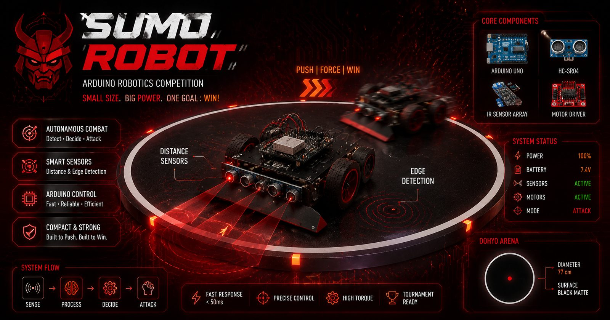

Project documentation — Index 36
Sumo Robot
A combat robot built for competition: detect the opponent, respect the edge of the dohyo, and push harder than you get pushed.

Project documentation — Index 36
A combat robot built for competition: detect the opponent, respect the edge of the dohyo, and push harder than you get pushed.

Sumo rules are simple: stay in the ring, push the opponent out. The engineering is not. This robot pairs distance sensors for finding the opponent with edge detection so it never launches itself out of the arena — and movement control tuned to be aggressive in the first half-second of contact.
Opponent detection feeding the attack strategy.
Recognises the dohyo boundary and reverses before it's too late.
Charges on contact — points come from pushing, not poking.
Built to survive being pushed back.